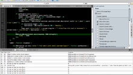

Ben Smawfield
I'm an Interface Developer living and working in London, England. This site is intended as a showcase for some of my work and to bring together some of the threads of my personality that are scattered across the web.
Featured Work
-
L'Wren Scott
June 2010
Website for fashion designer L'Wren Scott.
Full front-end and Wordpress CMS driven back-end delivered in 4 days, including integration of Vimeo videos.
-
Hotels.com
June 2009 - June 2010
Maintaining and building Hotels.com to develop a quality and high-performing site for its quarter of a million daily visitors. Working in a distributed environment with a team based in London, Dallas, Budapest and Szeged.
Primarily part of a SCRUM team with UX and Creative, designing, prototyping and building the next-generation of hotel search interaction on the site. Also responsible for auditing quality of existing site-wide code, making recommendations and flagging issues, contributing to best-practice documents for improvements of accessibility, performance, mobile web development and general code quality.
-
BT Tradespace
April 2009 - June 2009
BT Tradespace is a website supporting an online community of small businesses. I was involved in this project for its first three months, working as part of an Agile technical team.
-
 kJSLint
http://community.activestate.com/xpi/kjslint-jslint-komodo
March 2009 - Present
kJSLint is a JS Lint extension for Komodo Edit. It uses Scintilla and Komodo's API and JavaScript engine to parse documents, run through them through JS Lint and output the results of the lint.
-
 HMV Storefinder
HMV Storefinderhttp://www.hmv.com/storefinder
January 2009 - April 2009
A Multimap storefinder for HMV.
-
Faryl Smith
January 2009 - February 2009
I led development of this project for one of Universal Music's emerging artists.
-
Barclays.com
September 2008 - February 2009
I was one of the principal interface developers on Barclays.com, building in excess of 80 module types to be used with Fatwire CMS, including pure JavaScript and AJAX work to progressively enhance layout and form modules.
-
HMV Get Closer
July - September 2008
Get Closer was HMV's music and film based social discovery site.
I worked on this Agile project through a number of iterations, styling pages and developing markup and javascript functionality within a .Net environment.
The site was nominated in 2008 for a British Interactive Media Award for best social media application.